Potencia
La potencia es una medida de la tasa a la que se realiza un trabajo o a la que se transfiere energía;
dicho de otra manera, mide la proporción en la cuál alguien o algo realiza trabajo en una unidad de tiempo.

Hay al menos tres formas en las que se expresa la potencia que son relevantes:
- Potencia instantánea (Pi): es la potencia medida en un instante dado en el tiempo. Si se toma en cuenta la ecuación para la potencia P = ΔE / Δt, entonces esta es la medición que se obtiene cuando Δt es infinitesimalmente pequeño.
- Potencia media (Pm): es la potencia medida durante un largo período, es decir, cuando en la ecuación Δt es muy grande. Una manera de obtenerla es usando integrales, para medir el área bajo la curva y dividirla entre el tiempo total. Aunque también es posible hacer una estimación usando unicamente geometría.
- Potencia pico (Ppc): es el valor máximo que puede tener la potencia instantánea en un sistema.
Unidades de medida
La unidad estándar, del Sistema Internacional de Unidades, para medir la potencia es el vatio o watt, cuyo símbolo es W.
Su nombre se debe al inventor escocés James Watt. Por definición, un watt es igual a un Joule (J) de trabajo realizado
por segundo.
Otra unidad de medida es el caballo de fuerza (hp por sus siglas en inglés), con orígenes en el siglo XVII, donde se refería a la potencia de un caballo típico utilizado para activar un cabrestante. Desde entonces, un caballo de fuerza métrico, conocido también como "caballo de vapor", se ha definido como la potencia necesaria para levantar 75 kg una distancia de 1 metro en 1 segundo. Esto equivale a 735.5 W. Otra definición de caballo de fuerza, porque hay varias diferentes, es la llamada caballo de fuerza mecánico, o "imperial", que es equivalente a 745.7 W.
Ademas, hay otra unidad de medida que son las BTU/h (British Thermal Unit), que se utilizan normalmente en la definición de la potencia de refrigeración de los sistemas de aire acondicionado, así como del poder calorífico de los combustibles. 1 BTU/h equivale a 3.412 W.
Otra unidad de medida es el caballo de fuerza (hp por sus siglas en inglés), con orígenes en el siglo XVII, donde se refería a la potencia de un caballo típico utilizado para activar un cabrestante. Desde entonces, un caballo de fuerza métrico, conocido también como "caballo de vapor", se ha definido como la potencia necesaria para levantar 75 kg una distancia de 1 metro en 1 segundo. Esto equivale a 735.5 W. Otra definición de caballo de fuerza, porque hay varias diferentes, es la llamada caballo de fuerza mecánico, o "imperial", que es equivalente a 745.7 W.
Ademas, hay otra unidad de medida que son las BTU/h (British Thermal Unit), que se utilizan normalmente en la definición de la potencia de refrigeración de los sistemas de aire acondicionado, así como del poder calorífico de los combustibles. 1 BTU/h equivale a 3.412 W.
Tipos de potencia y sus fórmulas
Potencia mecánica
La potencia mecánica aplicada sobre un sólido rígido viene dada por el producto de la fuerza resultante aplicada por la velocidad: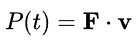
Si además existe rotación del sólido y las fuerzas aplicadas cambian su velocidad angular:
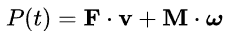
Donde F es la fuerza resultante, M el momento resultante, v velocidad del punto donde se calculó la resultante efectiva, y ω la velocidad angular del sólido.
Para un sólido deformable o un medio continuo general la expresión es más compleja. La variación de energía cinética viene dada por:
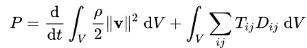
Donde Tij son los componentes del tensor de tensiones de Cauchy, y Dij los componentes del tensor de velocidad de deformación.
Potencia eléctrica
La potencia eléctrica desarrollada en un cierto instante por un dispositivo viene dada por la expresión:
Donde P(t) es la potencia instantánea, I(t) la corriente que circula por él, y V(t) la diferencia de potencial a través del componente.
Si el componente es una resistencia, tenemos:
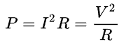
Donde P es la potencia, I la corriente, V el voltaje, y R la resistencia.
Potencia calorífica
La potencia calorífica de un dispositivo es la cantidad de calor que libera por la unidad de tiempo: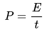
Donde P es la potencia instantánea, E la energía proporcionada, y t el tiempo.
Potencia sonora
La potencia sonora, considerada como la cantidad de energía que transporta la onda sonora por unidad de tiempo a través de una superficie, depende de la intensidad de la onda y de la superficie; su expresión es: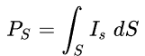
Donde Ps es la potencia, Is la intensidad sonora, y dS el elemento de superficie alcanzado por la onda sonora.
Aplicaciones de la potencia
En nuestro día a día hacemos uso de la potencia sin que nos demos cuenta, la usamos para todo: para iniciar un movimiento, para lanzar un objeto,
para arrancar nuestro carro, para levantar cosas, y un infinito etcétera. Pero en donde más se identifica el uso de la potencia es en los aparatos
electrónicos, pues la identificamos por el uso de watts (W).
Por ejemplo, para accionar cualquier dispositivo que necesite una entrada de energía eléctrica, ya sea una computadora, un refrigerador, una pantalla,
cargar nuestro celular, entre muchos otros ejemplos.
Otra aplicación es en las compañías de electricidad o en las plantas generadoras de energía eléctrica, que necesitan medir la cantidad de energía utilizada en ciertos períodos de tiempo o en algún punto de este, así como calcular la potencia promedio. Hay un sin fin de aplicaciones que nos ayudan en nuestra vida cotidiana y que satisfacen nuestras necesidades, además de que sigue siendo indispensable el medir con precisión la potencia para la comprensión de cómo hacer un mejor uso de los recursos energéticos que hay en el mundo actual.
Otra aplicación es en las compañías de electricidad o en las plantas generadoras de energía eléctrica, que necesitan medir la cantidad de energía utilizada en ciertos períodos de tiempo o en algún punto de este, así como calcular la potencia promedio. Hay un sin fin de aplicaciones que nos ayudan en nuestra vida cotidiana y que satisfacen nuestras necesidades, además de que sigue siendo indispensable el medir con precisión la potencia para la comprensión de cómo hacer un mejor uso de los recursos energéticos que hay en el mundo actual.
Ejercicios resueltos de potencia
Ahora, para comprender un poco mejor el tema de potencia, se mostrarán paso a paso dos ejercicios comunes y sencillos.
Ejemplo 1.- Se tiene un auto, cuya masa es de 1200 kg, está en reposo, y le toma 5 segundos alcanzar los 10 metros por segundo. Hallar la potencia media de salida del motor.
Se utiliza la fórmula del trabajo realizado entre el tiempo.
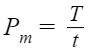
Sustituir el trabajo T por la fórmula de energía cinética que se le dió al auto.
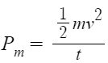
Sustituir las variables por los valores conocidos. Y recordemos la fórmula del Joule, que en la fórmula de la potencia media se simplifica.
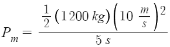 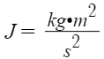
Calcular.
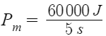
Obtener el resultado de la potencia promedio. Recordemos que un watt equivale a un Joule sobre segundo.
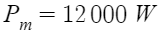
Ejemplo 1.- Se tiene un auto, cuya masa es de 1200 kg, está en reposo, y le toma 5 segundos alcanzar los 10 metros por segundo. Hallar la potencia media de salida del motor.
Se utiliza la fórmula del trabajo realizado entre el tiempo.
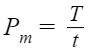
Sustituir el trabajo T por la fórmula de energía cinética que se le dió al auto.
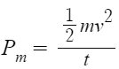
Sustituir las variables por los valores conocidos. Y recordemos la fórmula del Joule, que en la fórmula de la potencia media se simplifica.
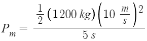 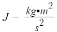
Calcular.
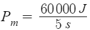
Obtener el resultado de la potencia promedio. Recordemos que un watt equivale a un Joule sobre segundo.
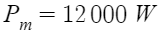

Ejemplo 2.- La potencia de un motor eléctrico es de 33hp. ¿A qué magnitud de velocidad constante puede elevar una carga de 10000 N?
Lo primero que tenemos que hacer es convertir los caballos de fuerza (hp, en este caso el caballo de fuerza mecánico), a watts, con la siguiente fórmula.
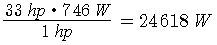
Ahora tenemos que utilizar una fórmula para calcular la velocidad con los datos que tenemos. Se puede obtener de la fórmula para calcular la potencia, solo usamos equivalencias y álgebra. Quedando el proceso de la siguiente manera:
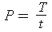
Se usa la fórmula del trabajo y se sustituye en la ecuación.
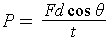
Como se puede observar, tenemos distancia (d) sobre tiempo (t), eso se sustituye con Velocidad (v).
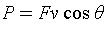
Como en un motor eléctrico, el ángulo que realiza la bobina es de 360°, entonces coseno de 360° se sustituye por 1, quedándonos:
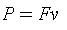
De esta fórmula, usando álgebra podemos calcular la velocidad, diviendo entre la fuerza (F) a ambos términos:
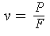
Por último, sutituimos los datos y calculamos. Y usando las fórmulas y equivalencias de Newtons y watts, nos quedarían metros sobre segundos:
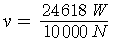 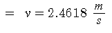
Lo primero que tenemos que hacer es convertir los caballos de fuerza (hp, en este caso el caballo de fuerza mecánico), a watts, con la siguiente fórmula.
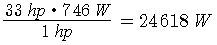
Ahora tenemos que utilizar una fórmula para calcular la velocidad con los datos que tenemos. Se puede obtener de la fórmula para calcular la potencia, solo usamos equivalencias y álgebra. Quedando el proceso de la siguiente manera:
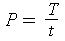
Se usa la fórmula del trabajo y se sustituye en la ecuación.
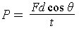
Como se puede observar, tenemos distancia (d) sobre tiempo (t), eso se sustituye con Velocidad (v).
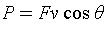
Como en un motor eléctrico, el ángulo que realiza la bobina es de 360°, entonces coseno de 360° se sustituye por 1, quedándonos:
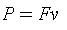
De esta fórmula, usando álgebra podemos calcular la velocidad, diviendo entre la fuerza (F) a ambos términos:
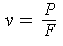
Por último, sutituimos los datos y calculamos. Y usando las fórmulas y equivalencias de Newtons y watts, nos quedarían metros sobre segundos:
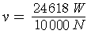 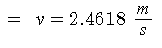